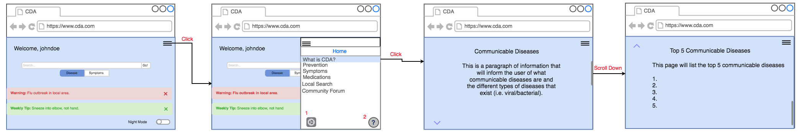
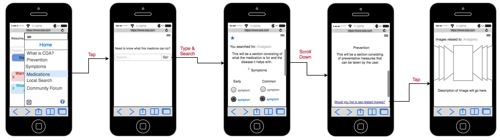

Wireframes
Wireframes For The Login Scenario
- When making a profile user can add a picture
- Notifications from settings are displayed on home screen
- Night mode option is visible at the bottom of screen to adjust the colors
Wireframes For The General Information Scenario
- Settings to adjust profile or if a guest to create a profile
- Help button to guide the user through the system
Wireframes For The Prevention Tab Scenario
- Allows you to favorite a page
- This will be whatever the user types
- The results would appear here if there are no results that will be stated instead
- Will show the symptoms and give the users the ability to mark symptoms they have experienced
- Images relating to the prevention methods, symptoms, and medications will be shown here, the user will have the ability to swipe through images
Wireframes For The Symptoms Tab Scenario
Wireframes For The Medications Tab Scenario
- Symptoms relate to each potential disease
Wireframes For The Local Search Scenario
- Each location is color coded based upon what it is
- The map view can show if there is an outbreak in the area
Wireframes For The Community Forum Scenario
- Allows other users to report on inappropriate posts
- Point system to validate users that post
- Verified user symbol/icon